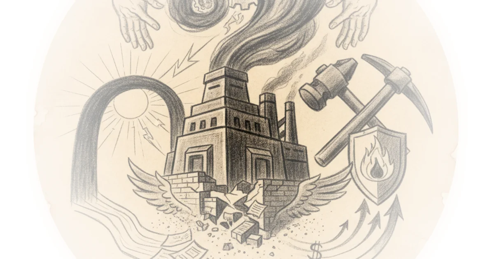

Do the YIMBYs want to do politics or not? Freddie deBoer · ·Jul 6, 2026 · 12 min read · Political Strategy
Zhang jian on China, the EU and Russia "De-Risking" from the US Various · Sinification ·Jul 3, 2026 · 14 min read · Political Strategy
Taiwan's war on renewables Jordan Schneider · ChinaTalk ·Jul 1, 2026 · 47 min read · Political Strategy
Why britons really regret brexit Niall Ferguson · Niall Ferguson's Time Machine ·Jun 30, 2026 · 14 min read · Political Strategy
Is the vibecession real — or is the survey broken? Nate Silver · ·Jun 29, 2026 · 10 min read · Political Strategy
America's most (and least) popular politicians in 2026 G. Elliott Morris · G. Elliott Morris ·Jun 29, 2026 · 10 min read · Political Strategy
Monopoly Round-Up: Why wall street isn't yet afraid of the left Matt Stoller · BIG by Matt Stoller ·Jun 28, 2026 · 15 min read · Political Strategy
June 27, 2026 Heather Cox Richardson · Letters from an American ·Jun 27, 2026 · 11 min read · Political Strategy
Debunking the myth of expensive coal plants Various · Energy Bad Boys ·Jun 27, 2026 · 12 min read · Political Strategy 
The narrow path to saving the republic Matt Yglesias · Slow Boring ·Jun 25, 2026 · 13 min read · Political Strategy
How do you beat an oligarchy? One bite at a time Matt Stoller · BIG by Matt Stoller ·Jun 24, 2026 · 12 min read · Political Strategy
A citizen’s guide to ken paxton Judd Legum · Popular Information ·Jun 24, 2026 · 10 min read · Political Strategy
Poll: Only 18% think U.S. Achieved its goals in Iran, as the administration's approval hovers at… G. Elliott Morris · G. Elliott Morris ·Jun 24, 2026 · 14 min read · Political Strategy
Chartbook 452 Europe's machiavellian moment? Adam Tooze · Chartbook ·Jun 21, 2026 · 12 min read · Political Strategy
June 15, 2026 Heather Cox Richardson · Letters from an American ·Jun 16, 2026 · 11 min read · Political Strategy
Two potential upcoming Canadian secession referenda and the broader issues they raise Various · Reason ·Jun 13, 2026 · 10 min read · Political Strategy
Disillusioned revolutionaries: Many founders died in despair about the American experiment Various · Reason ·Jun 13, 2026 · 17 min read · Political Strategy
Crosspost: RENÉE DiRESTA: Red mirage, blue shift, online cope Brad DeLong · DeLong's Grasping Reality ·Jun 10, 2026 · 13 min read · Political Strategy
On defeating the Stupid/Interested quadrant Richard Hanania · ·Jun 8, 2026 · 13 min read · Political Strategy
Monopoly Round-Up: Graham platner and stock market Democrats Matt Stoller · BIG by Matt Stoller ·Jun 7, 2026 · 11 min read · Political Strategy
Of course this is a coordinated ratfucking of graham platner Freddie deBoer · ·Jun 5, 2026 · 10 min read · Political Strategy
The origins of horseshoe politics Matt Yglesias · Slow Boring ·Jun 5, 2026 · 14 min read · Political Strategy
Re: The truly abominable kevin hassett: Steve durlauf does the work of the lord: Life in the 2000s Brad DeLong · DeLong's Grasping Reality ·Jun 1, 2026 · 12 min read · Political Strategy
Aipac’s most hated 2028 democratic contenders, by the numbers Mehdi Hasan · Zeteo ·May 29, 2026 · 13 min read · Political Strategy
The left-populist fallacy Matt Yglesias · Slow Boring ·May 29, 2026 · 21 min read · Political Strategy
America needs liberal nationalism back Noah Smith · Noahpinion ·May 29, 2026 · 16 min read · Political Strategy